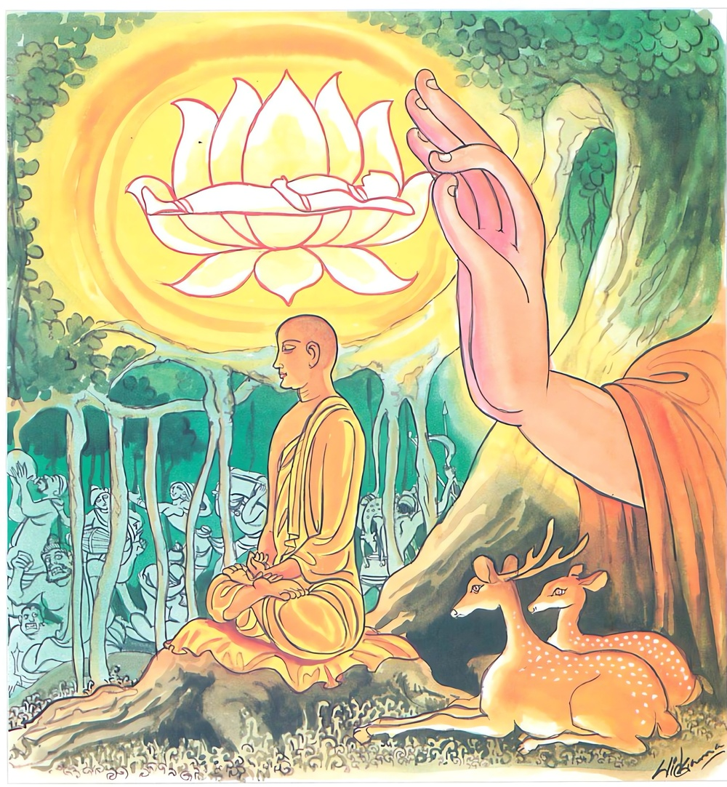

26-17 සැරියුත් මහතෙරුන්ග් මෑනියන්දෑ කියූ රළු බස්
මෙම කතාව ධම්මපද අටුවාවෙන් ද කියවන්න.
අක්කොධනං වතවන්තං සීලවන්තං අනුස්සුතං
දන්තං අන්තිමසාරීරං තමහං බ්රූමි බ්රාහ්මණං.
නොකිපෙන (ධුතාඞ්ග) ව්රතයෙන් යුක්ත වූ ශීලයෙන් පරිපූර්ණ වූ (තෘෂ්ණා ස්නේහයෙන්) තෙත් නොවූ දැමුනාවූ (භව කෙළවර සිටි හෙයින්) අන්තිම ආත්මභාවයෙන් යුත් ඒ ක්ෂීණාස්රවයා බ්රාහ්මණයෙකි යී මම කියමි.

ශාරීපුත්ර මහාස්ථවිරයන් වහන්සේ, පන් සියයක් දෙනා වහන්සේත් ගෙණ සිඟා වඩනා සේක් නාලක ගම මෑනියන්දෑ ගේ ගෙට සිඟා වැඩිය සේක. එහි දී මෑනියන්දෑ උන්වහන්සේ ගෙයා වඩා හිඳුවා වළඳවන වේලෙහි උන්වහන්සේට “එම්බල! ඉඳුල් කන්න! ඉඳුල් බතක් පමණකුත් ලබන්නට නො හැකි ව කබලක් ගෙණ අනුන්ගේ ගෙපිළිකණුවල හැසිර හැඳි තලෙන් පොඩි කළ කැඳ බොන්නට අසූ කෙළක් ධනය හැර දමා පැවිදි වූයෙහි, එයින් තෝ මා ද නැසූයෙහි, දැන් වත් බඩ පුරා හොඳට කව”යි ඇණුම් බැණුම් කළහ. උන්වහන්සේ කැටු ව ගිය භික්ෂූන් වහන්සේලාට ද කෑම් බීම් දෙමින් “තමුන්නාන්සේලා විසින් මා පුත් දාසයෙක් කරණ ලද්දේ ය, එහෙත් හෙඳට කවු, බොවු”යි නිගා කළහ. මහා ස්ථවිරයන් වහන්සේ භික්ෂාව ගෙණ කිසිත් නො බැණ විහාරයට වැඩියාහ. එකල්හි රාහුල ස්ථවිරයන් වහන්සේ බුදුරජානන් වහන්සේට දන් වළඳන්නට ආරාධනා කළහ. උන්වහන්සේ “රාහුල! සිඟා ගියහු කොහි දැ?”යි අසා වදාළ කල්හි “ස්වාමීනි! මුත්තනියන්ගේ ගමටැ”යි කීහ. “රාහුලගේ උපාද්ධ්යායයන්හට මුත්තනිය කුමක් කියූ දැ?”යි ඇසූ කල්හි “මුත්තනිය මාගේ උපාද්ධ්යායයන් වහන්සේට ඉතා තදින් ඇණුම් බැණුම් කළා ය”යි කීහ. නැවැත බුදුරජානන් වහන්සේ, “කුමක් කියා ඇණුම් බැණුම් කළා දැ?”යි ඇසූ කල්හි රාහුල ස්ථවිරයන් වහන්සේ, මුත්තනිය ඇණුම් බැණුම් කළ සැටි කියාලූහ. “හොඳ යි, මුත්තනිය එසේ පරොස් බස් කියා ඇණුම් බැණුම් කරද්දී තමුසේගේ උපාද්ධ්යායයා ඒ ඇණුම් බැණුම් වලට කුමක් කීයේ දැ?”යි ඇසූ විට “ස්වාමීනි! මාගේ උපාද්ධ්යායයන් වහන්සේ එයට වචන මාත්රයකුත් නො කියා එහිලා බිහිරකු සේ ගොලුවකු සේ, සිටගත්හ”යි කියා සිටියහ. මේ කතාව අසා සිටි භික්ෂූන් වහන්සේලා “ඇවැත්නි! බලවු, සැරියුත් මහතෙරුන්ගේ ගුණය ඉතා මහත් ය, ඉතා අසිරි ය, උන්වහන්සේ තම මව පරොස් බසින් බැණ දොඩද්දීත් කිසිත් නො බැණ නිහඬව සිටියහ, ඒ කිසිවකට ද නො කිපුනාහ”යි දම්සබාවට රැස් වී කතා කරන්නට වූහ. ඒ වේලෙහි දම්සබාවට වැඩම කළ බුදුරජානන් වහන්සේ මේ කතාව අසා “මහණෙනි! රහත්හු කිසිදාක කිසිවකට කිසිවකුට නො බණන්නෝ ය, නො දොඩන්නෝ ය, නො කිපෙන්නෝ ය”යි වදාරා මේ ධර්මදේශනාව කළ සේක.
අක්කොධනං වතවන්තං සීලවන්තං අනුස්සුතං,
දන්තං අන්තිමසාරීරං තමහං බ්රෑමි බ්රාහ්මණන්ති.
නො කිපෙන සුලු ව්රත ඇති සිල්වත් වූ තෙත් නො වූ දැමුනා වූ පැසුළු සිරුරු දරණ ඔහු, මම බමුණු යි කියමි.
අක්කොධනං = නො කිපෙන සුලු. ක්රෝධ නො කරන්නා වූ.
කිසිත් කරුණක් නිසා කිසිවකු කෙරෙහි කිසිදාකත් නො කිපෙනුයේ ‘අක්කොධන’ නම්.
වතවන්තං = ව්රත ඇති.
පංසුකූලිකඞ්ගාදී වූ තෙළෙස් ධුතාඞ්ගයන් අතුරෙහි තම ශක්ති පමණින් යම් කිසි ධුතාඞ්ගයක් සමාදන් ව නො කඩ කොට පුරණුයේ දරණුයේ ‘වතවන්ත’ නම්. [1]
කාමසංඥා - ව්යාපාදසංඥා - විහිංසාසංඥා - දෘෂ්ටිසංඥාවන්හි ඇලී ගත් සත්ත්වයා දැඩි ව ගත් ව්රතයෝ ඉතා බොහෝ ය. හස්ති - අශ්ව - ගො - කුක්කුර - කාක - වාසුදෙව - බලදෙව - පූණ්රභද්ර - මණිභද්ර - අග්නි - නාග - සුපර්ණ - යක්ෂ - අසුර - ගන්ධර්ව - මහාරාජ - චනද්ර - සූර්ය්ය - ඉන්ද්ර - බ්රහ්ම - දෙව - දිශාව්රතයනාදීහු ය ඔවුහු. නිර්දෙශයෙහි මෙසේ ආහ:- “වතන්ති හත්ථිවතං වා අස්සවතං වා ගොවතං වා කුක්කුරවතං වා කාකවතං වා වාසුදෙවවතං වා බලදෙවවතං වා පුණ්ණභද්දවතං වා මණිභද්දවතං වා අග්ගිවතං වා නාගවතං වා සුපණ්ණවතං වා යක්ඛවතං වා අසුරවතං වා ගන්ධබ්බවතං වා මහාරාජවතං වා චන්දවතං වා සූරියවතං වා ඉන්දවතං වා බ්රහ්මවතං වා දෙවවතං වා දිසාවතං වාති” යනු විසින්.
මෙහි දැක් වූ මේ එක ද ව්රතයෙක් භවවිමුක්තිය පිණිස නො වෙන්නේ ය. ඒ පිණස වනුවෝ පංසුකූලිකඞ්ගාදී වූ ව්රතයෝ ය. ඒ පංසුකූලිකඞ්ගාදිය සමාදන් ව ගත්තේ ම මෙහි ‘වතවන්ත’ යි දතයුතු ය. පින් උපදවන උපවාසාදික්රියා ව්රත නමැ යි කීහ. පරවාදීන් විසින් මොවුහු පින් උපදවන ක්රියා යි දක්වන ලද නමුත් ඒ එසේ නො වෙත්. පින් උපදවන්නෝ ධුතාඞ්ගාදීහු ය.
සීලවන්තං = සිවු පිරිසිදු සීලයෙන් සිල්වත් වූ.
පාතිමොක්ඛසංවරසීලය - ඉන්ද්රියසංවරසීලය - ආජීවපාරිසුද්ධසීලය - පච්චයසන්නිස්සිතසීලය යන සිවුපිරිසිදු සීලයෙන් සිල්වත් වූයේ ‘සීලවන්ත’ නම්. මේ තෙමේ මේ කියූ සීලයන්ගෙන් නො තොර ව සිටියේ ජීවිත හේතුයෙනුදු මේ සිල් නො කඩ කරණුයේ ය. [2]
අනුස්සුතං = තෙත් නො වූ.
තෘෂ්ණා නැමැති පින්නෙන් තෙත් නො වූයේ ‘අනුස්සුත’ නම්. චක්ෂුරාදී වූ සදොර උපදනා කාම තණ්හාදීන්ගේ වශයෙන් එක් සිය අටක් ප්රභේදයෙන් ප්රභේදවත් වූ තෘෂ්ණායෙන් නො තෙත් වූයේ ය. [3]
දන්තං = දැමුනු.
චක්ෂුරාදිෂඩින්ද්රිය දමන්යෙන් දැමුනේ, පිරිසිදු කායසමාචාරාදිය ඇතියේ අත්පා කුකුස් නැතියේ ‘දන්ත’ නම්.
අන්තිමසාරීරං = පැසිළු සිරුරු ඇති.
ඉදිරියෙහි උපතක් නැතියේ ‘අන්තිමසාරීර’ නම්. උපතට හෙත් වන සියලු කෙලෙස් සිවු මග නුවණින් නසා සිටි බැවින් ක්ලේශරහිතස්කන්ධ ඇතියේ ය.
තං අහං බ්රෑමි බ්රාහ්මණං = මම ඔහු බමුණු යි කියමි.
නො කිපෙනසුලු සමාදන් ව ගත් ධුතාඞ්ග ඇති සිවු පිරිසිදු සීලයෙන් සිල්වත් වූ තෘෂ්ණා රහිත වූ දැමුනු ඉඳුරන් ඇති පැසුළු සිරුරු ඇති රහතුන් වහන්සේ බ්රාහ්මණ වන සේකැ’යි මෙයින් වදාළ සේක.
ධර්මදේශනාවගේ අවසානයෙහි බොහෝ දෙන සෝවන් ඵලාදියට පැමිණියාහු ය.
ශාරීපුත්ර වස්තුව නිමි.